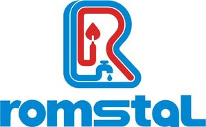

Trade Mark Journal No.2025/011 14 March 2025
WO0000001842178 (1,2,3,4,6,7,8,9,11,16,17,18,19,20,21,22,25,35,36,37,39,40,41,42,43)
Office of origin: European Union Intellectual Property Office (EUIPO)
Date of International Registration:3 June 2024
Date of designation in the UK:
3 June 2024

The mark contains the colours red and blue.
- Class 1
- Waterproofing mixtures; fillers and adhesives; chemical solutions for use in the manufacture of filters and softeners.
- Class 2
- Lacquers, paints, varnishes; preservatives against rust and against deterioration of wood; dyes, tinting pastes, paint additives in the nature of tinting colors, inks for printing, marking and engraving; raw natural resins; metals in foil and powder form for use in painting, decorating, printing and art.
- Class 3
- Products for cleaning; solutions for unclogging drains.
- Class 4
- Electrical energy.
- Class 6
- Red pipes, steel; pipe collars of metal; sumps, water tanks, of metal; manually operated metal valves, other than parts of machines; metal flanges; metal drains for bathrooms, kitchen and roofs; bathroom gutters, of metal; non-return valves of metal, other than parts of machines; connectors of metal for pipes; drain columns for bathtubs; storm drains, roof gutters and waste pipes; metal pipes and fittings therefor; soldering wire of metal; irrigation spray pipes of metal; collars (flanges) and fastening systems, rails and fittings for quick-fit fittings for rails; clips and clamps of metal; small hardware of metal for tanks, toilets, taps, batteries, tubs, sewage systems and connector fittings of metal; lead seals; sealing caps of metal; tubing, pipes, hollow profiles and fittings for tubes, pipes, tubular profiles, steel; semi-wrought cast steel articles; flap valves of metal; irrigation pipes, of metal; bells; fuel tanks.
- Class 7
- Horizontal axis wind turbines and fittings therefor; hydrophores, pumps [machines] and pump sets, submersible pumps and pumps for draining; hot water circulation pumps; water pump accessories; power operated tools; drilling hammers and wreckers; drilling and screwdriving tools (machines); disc cutters; grinding machines and accessories; crimping, expanding and pressing machines and parts therefor; power tools and machines for shaping, milling and cutting pipes; pipe bending and rolling machines; core drills; slitter and grooving attachments; pressure pumps [parts of machines]; welding devices and welding accessories; electric paint guns; power staplers; current generators; cleaning machines (electric) and parts and accessories therefor; screwdrivers, electric; electric gardening tools; chainsaws; shearing machines; snow removal machines; integrated dishwashers, partially built-in and freestanding dishwashers; food processors; electric mincers, blenders; vacuum machines; electric agitators; air compressors; hydraulic valves; valves for pumps; strimmers; table saws.
- Class 8
- Hand tools, hand-operated; wrenches, ring spanners and socket spanners; screwdrivers, non-electric, pincers and pliers; hammers [hand tools], files [tools]; vices; hand saws and manual shears; box cutters and spare knives therefor; tools for repairs; snakes for unclogging drains; pipe threading hand tools and parts therefor; hand operated hand tools for pipe splaying, grooving and cutting; devices for cutting ceramic tiles and ceramic tile accessories; bench vices.
- Class 9
- Thermostats; thermostat timers; smart home appliances and control devices; flat solar panels, with tubes, with a pressurised tank; solar cell accessories; photovoltaic panels; inverters for photovoltaic panels; electric and electronic control and regulating apparatus; solar batteries and solar storage equipment; automation accessories for photovoltaic systems; installation accessories for photovoltaic panels; protective equipment; sprinkler heads being parts of sprinkler systems for fire protection; checking and signalling apparatus and accessories; pressure gauges; thermostatically controlled valves; electric valves; thermometers; inspecting apparatus and instruments; voltage testers; plugs, sockets and other contacts [electric connections] and switches, electric; industrial plugs and sockets; rigid and flexible electric cables and wires; conductors, conductive electric strips; fuses for weak electrical current; DC input power supplies; switch boxes (electricity); cables for earthing; modular protection and control devices; battery boxes, branch boxes [electricity] and control panels [electricity], of metal electric panel accessories; industrial protection and automation control systems and installations; electricity measuring instruments; residential power stations; active and reactive energy sources, namely condensers [capacitors], inductors [electricity], solar energy collectors, solar cells; flashlights; miscellaneous electrical controlling and measuring devices; water counters and water meters; electric measuring and regulating apparatus, electric measurement and control devices; metal fuses; solenoid valves.
- Class 11
- Residential area heating sources; gas-fired central heaters; nuclear reactors; nuclear power plants; wood and pellet-fired heating apparatus and installations and stoves; terrace heating systems; central heating accessories; heating apparatus; convectors; radiant plates; bath tubs and taps and fittings; underfloor heating with a thermal agent; electric underfloor heating apparatus and installations; de-icing apparatus/systems; storage water heaters; electric and wood-burning instant heaters; serpentine boilers; storage tanks for warm and cold water; heat exchangers, not parts of machines; heating sources for industrial premises; convective hot water heating systems; hot air ovens; gas convective heating systems; heat generators; boilers with burner; burners; accessories for burners and boilers; heat pumps and taps and fittings; thermodynamic heating installations; bathroom wash basins; toilet bowls; toilet cisterns and taps and fittings; bidets; taps for sink units, bath mixers, shower taps and mixer taps for bidets; bathtub enclosures; bath tubs and bath tubs with hydro massage and taps and fittings; simple shower cubicles and shower cubicles with hydro massage; shower receptors; shower doors and walls, shower screens; simple shower columns and shower and hydromassage columns; shower sets; shower heads; shower arms and taps and fittings; saunas; sconces (bathroom light fittings); sanitary ware for public bathrooms; toilets [water-closets] for people with disabilities; sensor taps for public bathrooms; urinals [sanitary fixtures]; hand driers; vandal-proof toilets [water-closets]; residential, multi-split, commercial air conditioners; accessories for air-conditioning apparatus; air handlers; air-conditioning apparatus; VRF systems; fan coils; chillers; heat regenerators; air curtains; destratifiers; air conditioning accessories; ventilation and venting grilles and tubing; ventilating fans; universal heating expansion tanks, solar and taps and fittings; water filters and replacements; electric hot water dispensers; electric water coolers; water softening systems; reverse osmosis stations; hydrant systems; plumbing taps; taps for water, gas, radiators, undercounter, washing machines; special taps and accessories therefor; separators for scrubbing gas and air; impurity water and air filters; water pressure reducers; gas regulators; heating regulators; sewage purification installations; thermostatic valves [parts of heating installations]; thermostatic radiator valves; air valves for steam heating installations; purification installations for sewage; fittings for the draining of water; sanitary water conduit fittings; irrigation nozzles, irrigation fittings, irrigation sprinklers; agricultural irrigation installations and fittings therefor; above-ground irrigation systems; watering installations, automatic; refrigerating apparatus; combinations of refrigerators and freezers; freezers; side-by-side refrigerators; wine refrigerators; wine coolers, namely, refrigerating cabinets containing racks for wine bottles and storage shelves; integrated ovens; fitted hot plates; microwave ovens [cooking apparatus]; range tops; extractor hoods for kitchens; ventilation hoods; extractor hoods; hood accessories; toasters; electric griddles [cooking appliances]; water heaters; bread machines; deep fryers; cooking apparatus; espresso machines and electric coffeemakers; LED lighting fixtures; technical lighting fixtures and industrial lighting fixtures; light sources; wall-mounted heating systems; spare parts for central heating, boilers, burners, floor heating, electric and gas boilers; spare parts for gas and electric instant heaters; spare parts for steam generators, spare parts for acetylene generators, fan heaters; spare parts for solar panels; heat exchangers [parts thereof]; spare parts for the aforesaid goods; expansion vessels for water pressure tanks; multicookers.
- Class 16
- Paper and cardboard; prints; bookbinding material; photographs [printed]; stationery and office requisites (except furniture); adhesive for stationery or household purposes; drawing materials and artists' materials; painters' brushes; educational, instructional and teaching materials; plastic sheets for documents, films and bags for wrapping and packaging; printing type; printing blocks.
- Class 17
- Fittings, not of metal, for compressed air lines; fittings, not of metal, for flexible pipes; fittings, not of metal, for rigid pipes; materials for thermal insulation and fire protection, namely, fire resistant composite panels made of carbon fibers; gaskets; gaskets; insulating materials; fibreglass for insulation; expanded polyethylene thermal insulation; elastomer thermal insulation; protections for insulation; non-metal joints for pipes; heat (non-conducting materials for retaining-); seals for pipes; sealing rings for pipes; connectors for pipes, not of metal; pipe jackets, not of metal; valves of rubber or vulcanised fibre; water-tight rings; watering hoses; PVC fittings and HDPE fittings; sealants for toilet tanks and bowls, not of metal; seals for taps, battery seals, bathtub fittings and plumbing systems, not of metal; sealants for joint systems and couplings, not of metal; sealants for joint systems, of metal.
- Class 18
- Tool bags of leather, empty.
- Class 19
- Branch pipes, not of metal; chimneys, not of metal; chimney pots, not of metal; chimney pipes, not of metal; chimney shafts, not of metal; drain pipes (not of metal); drain traps [valves], not of metal or plastic; roof drains and roofing, not of metal, incorporating solar cells; ducts, not of metal, for ventilating and air conditioning installations; swimming pools [structures, not of metal]; chimney extensions, not of metal; parquet floor boards; parquet flooring; window screens, not of metal; non-metallic roof gutters; gutters, not of metal; pipes (water-) not of metal; ceramic tiles for building; floor tiles, not of metal; bathroom, kitchen, hallway and living room tiles; outdoor tiles; mosaics for building; non-metallic drainage pipes having sound absorbing properties; drain columns for bathtubs, not of metal; rigid pipes, not of metal and reinforcing materials, not of metal, for building; valves for water pipes, not of metal or plastic; wall claddings, used in buildings, not of metal; non-metallic wall tiles; wall boards, not of metal; cladding for walls used in buildings, not of metal; wall tiles, not of metal; building boards with thermal insulation properties; pipes and fittings for wells.
- Class 20
- Furniture; mirrors (silvered glass); picture frames; containers, not of metal, for storage or transport; collars [non-metallic] for fastening pipes; work benches; bathroom furniture; countertops for bathroom furniture; mirrors for bathroom furniture; furniture doors; dowels, not of metal / plugs [dowels], not of metal / dowels [plugs], not of metal; drain traps [valves], of plastic; furniture partitions; furniture fittings, not of metal; furniture of metal; furniture shelves; legs for furniture; individual cabinets; removable mats for sinks / removable sink mats or sink protectors; winding spools, not of metal, non-mechanical, for flexible hoses; tanks, not of metal or masonry / water storage tanks, not of metal nor of masonry; shower chairs; standing desks; tool boxes (non-metallic-) [empty]; tool cabinets (non-metallic-) [empty]; towel dispensers, fixed, not of metal / towel dispensers, not of metal, fixed; towel closets (furniture); valves of plastic, other than parts of machines; work trestles; wall-mounted baby changing platforms; valves for water pipes, of plastic; washstands (furniture); non-metallic, non-mechanical reels for flexible hoses; furniture fittings, not of metal; furniture gripping and fastening systems; fixed and movable supports (non-metallic).
- Class 21
- Household utensils for cleaning; cleaning accessories; soap dispensers; nozzles for sprinkler hose; nozzles for watering cans / roses for watering cans; drainage plungers; utensils for toilet purposes; toilet paper holders; watering devices, sprinkler systems; cauldrons, other than of metal.
- Class 22
- Ropes and strings; nets; tents and tarpaulins; awnings of textile or synthetic materials; sails; sacks for the transport and storage of material in bulk; padding, cushioning and stuffing materials, except of paper, cardboard, rubber or plastics; raw fibrous textile materials and substitutes therefor.
- Class 25
- Clothing, footwear and headgear; shower caps.
- Class 35
- Advertising; business management; business administration; office functions; bringing together, for others, a variety of goods, including waterproofing mixtures, fillers and adhesives, solutions for filters and softeners, dyes, varnishes and lacquers, preservatives against rust and against deterioration of wood, dyes, tinting pastes, inks for printing, marking and engraving, raw natural resins, metals in foil and powder form for use in painting, decorating, printing and art, products for cleaning, solutions for unclogging drains, electrical energy, red steel pipe, boiler fittings and accessories, metal water manifolds and distributors, directional valves and metal valves, metal flanges, metal drains for bathrooms, kitchens and roofs, metal gutters for bathrooms, non-return valve of metal, toilet bowl connectors, drain columns for bathtubs, storm drains, gutters and rainwater pipes, metal pipes and fittings, soldering accessories, sprinkling pipes of metal, collars (flanges) and fastening systems, rails and fittings for quick-fit fittings for rails, gripping and clamping systems, fittings of metal for tanks, toilets, taps, batteries, tubs, sewage systems and connector fittings of metal, joint system sealants, water treatment seals and assembly fitting, tubes, pipes, tubular profiles and accessories, of steel, other articles of metal, flap valves of metal, metal pipes for irrigation, horizontal axis wind turbines and fittings therefor, water pressure tanks, pumps and pumping units, submersible and drainage pumps, hot water circulation pumps, water pump accessories, expansion vessels for water pressure tanks, electric tools, drilling hammers and wreckers, drilling and screwing machines, machines for abrasive grinding, machines for grinding and accessories, crimping, expanding and pressing devices and fittings, devices for freezing and cutting pipes, pipe rolling and bending machines, core drills, grooving devices and fittings, test pumps, welding devices and fittings, electric paint guns, electric staplers, electric current generating generators, electrical equipment and cleaning accessories, electric screwdrivers, gardening tools: chainsaws, hair clippers, snow removal articles, dishwashers, partially built-in and standalone, food processors (electric), multicookers, grinders/crushers, electric, immersion blenders, vacuum devices, electric mixers, air compressors, hydraulic valves, valves for pumps, hand tools (hand-operated), wrenches, ring spanners and socket spanners, screwdrivers, pincers and pliers, hammers, files [tools], cutting tools (hand tools), vices, hand-operated saws and scissors, cutters and accessories, repair tools, snakes for unclogging drains, pipe threading devices and accessories, devices and fittings for splaying, grooving and cutting pipes, cutting devices and attachments for ceramic tiles, temperature detectors, thermostat timers, smart home appliances and control devices, flat solar panels, with tubes, with a pressurised tank, solar panel accessories, photovoltaic panels, inverters for photovoltaic panels, joysticks, solar batteries and accumulators, photovoltaic system automation accessories, installation accessories for photovoltaic panels, protective, sprinkler heads, testing and signalling devices and accessories, pressure gauge, thermostatically controlled valves, electric valves, thermometers, inspection cameras, pressure testers, sockets, plugs and other contacts (electric connections) and circuit breakers, industrial plugs and sockets, rigid and flexible electric cables and special applications, conductors, conductive electrical strips, weak currents, sockets, cable and earthing ducts, modular protection and control devices, metal boxes and panels, electrical panel accessories, industrial protection and automation, electricity meters, residential power stations, active and reactive power sources, call bells, electric torches, miscellaneous electrical devices, water counters and water meters, electric measuring and control devices and appliances, residential heating sources, gas-fired central heating systems, power plants, wood and pellet-fired heating and stoves, terrace heating systems, central heating accessories, heating apparatus, convectors, radiant plates, lock bolts, solenoid valves and accessories, underfloor heating with a thermal agent, electric underfloor heating, de-icing devices/systems, boilers, electric and wood-burning instant heaters, serpentine boilers, hot and cold water tanks, heat exchangers, heating sources for industrial spaces, convective hot water heating systems, hot air ovens, gas convective heating systems, heat generators, boilers with burner, burners, accessories for burners and boilers, heat pumps and accessories, thermodynamic systems, bath grab bars, toilet bowls, toilet tanks and accessories, bidets, taps for sink units, baths, shower units and bidets, bath enclosures, simple and hydromassage bathtubs and accessories, simple and hydromassage shower cubicles, shower receptors, shower doors, shower screens and shower walls, simple single and hydromassage shower columns, shower sets, shower heads, shower caps and handles and accessories, saunas, bath fittings, sanitary ware for public bathrooms, bathrooms for disabled people, sensor taps for public bathrooms, urinals (sanitary fixtures), hand dryers, vandal-proof bathrooms, residential, multi-split, commercial air conditioners, air conditioning accessories, air handlers, air conditioners, VRF systems, fan coil units, chillers, heat recovery devices, air curtains, destratifiers, air-conditioning accessories, ventilation and venting grilles and tubing, fans, universal heating expansion tanks, solar and accessories, water filters and replacements, drinking water containers, gas tanks, water softening systems, reverse osmosis stations, hydrant systems, taps for installations, taps for water, gas, radiators, undercounter, washing machines, special taps and accessories therefor, separators for scrubbing gas and air, filters for impurities, water pressure reducers, gas regulators, heating regulators, plumbing systems, valves, drainage installations, fittings for the draining of water, water pipe fittings, nozzles, fittings, sprinklers for irrigation, irrigation automation and accessories, above-ground irrigation systems, automatic irrigation systems, refrigerating apparatus, fridge freezers, deep freezers, side-by-side refrigerators, wine display cabinets, built-in cookers, inset cooking tops, microwaves, kitchens, smoke absorbers for household purposes, ventilation hoods, extractor hoods, hood accessories, toasters, electric barbecues, immersion heaters, bread-making machines, frying machines, cooking apparatus, espresso machines and electric coffee machines, LED lighting devices, technical and industrial lighting fixtures, lighting sources, wall-mounted central heating systems, spare parts for central heating systems, boilers, burners, floor heating systems, electric and gas boilers, spare parts for gas and electric boilers, spare parts for generators, fan heaters, spare parts for solar panels, spare parts for heat exchangers, spare parts for all the aforesaid goods, paper and cardboard, good prints, bookbinding material, photographs, stationery and office supplies, except furniture, adhesives for stationery or household purposes, drawing materials and artists' materials, paint brushes, instructional and teaching material, plastic covers for documents, films and bags for wrapping and packaging, typography, printer's blocks, fittings, not of metal, for compressed air lines, fittings [non-metallic] for flexible pipes, for rigid pipes, non-metallic fireproof fittings, waterproof packing, lagging materials, glass wool for insulation, expanded polyethylene thermal insulation, elastomer thermal insulation, insulation protection, non-metallic pipe unions, conductive materials for heat retention, seals for pipes, pipe gaskets, non-metallic pipe unions, non-metallic pipe casings, valves of rubber or vulcanised fibre, water-tight rings, irrigation hoses, PVC and HDPE fittings, fittings not of metal for tanks and toilets, non-metallic fittings for taps, batteries, tubs and sewage systems, non-metallic gaskets for joint systems and fittings, tool bags, empty, pipe branches, not of metal, chimneys, not of metal, chimney cowls, not of metal, chimney pipes, not of metal, chimney flues, not of metal, waste pipes, not of metal, drainage siphons (valves), not of metal or of plastic, roof drains and collectors, ducts, not of metal, for ventilating and air-conditioning installations, swimming pools [structures], not of metal, extension elements, not of metal, for chimneys, parquet floorboards, parquet flooring, screens, not of metal, roof gutters, not of metal, gutters, not of metal, water pipes, not of metal, ceramic tiles for building, tile floors, not of metal, bathroom, kitchen, hall and living room tiles, outdoor tiles, filler for mosaics, sound absorbing PVC sewage systems, drain columns for bathtubs, not of metal, plastic pipes and accessories, valves for water pipes, not of metal or plastic, wall cladding, not of metal, used in construction, cladding for walls used in buildings, not of metal, wall tiles for building, not of metal, boards for thermal insulation, pipes and fittings for wells, furniture, mirrors, picture frames, containers, not of metal, for storage or transport, collars [non-metallic] for fastening pipes, workbenches, bathroom vanities, countertops for bathroom furniture, mirrors for bathroom furniture, doors for furniture, dowels, not of metal / plugs [dowels], not of metal / dowels [plugs], not of metal, drain traps [valves] of plastic, furniture partitions, fittings for furniture, not of metal, furniture of metal, furniture shelves, feet for furniture, drawer units, removable mats for sinks / removable sink mats or sink protectors, non-metallic, non-mechanical reels for flexible hoses, tanks, not of metal or masonry / basins, not of metal or masonry, table saws, shower chairs, standing desks, tool boxes, not of metal, unfilled, tool cabinets, not of metal, unfilled, towel dispensers, fixed, not of metal / towel dispensers, not of metal, fixed, furniture towel rails, valves, not of metal, other than machine components, work trestles, cauldrons, not of metal, vice benches of metal, wall-mounted baby changing platforms, water pipe valves of plastic, washbasin stands [furniture], non-metallic, non-mechanical reels for flexible hoses, furniture fittings, not of metal, furniture gripping and fastening systems, not of metal, household utensils for cleaning, cleaning accessories, soap dispensers, nozzles for watering hoses, nozzles for watering cans / roses for watering cans, drainage plungers, utensils for toilet purposes, toilet paper holders, irrigation devices / sprinkling devices (excluding the transport thereof) allowing customers to conveniently view and purchase them, such services may be provided by retail stores, wholesale outlets, through vending machines, mail order catalogues or by means of electronic media, including via websites; real estate auctioneering; real estate marketing; real estate sales management services; services as a consultant; business and commercial management services and advertising; marketing; business and management consulting services; services as a consultant, in relation to the following fields: public relations and advertising; compilation of information to computer databases; drawing up of statistics; employment agency services; personnel management consultancy; personnel recruitment; photocopying services; secretarial services; systemisation of information into computer databases; opinion polling; market research; organising and conducting of trade fairs.
- Class 36
- Insurance underwriting; financial affairs; monetary affairs; real estate affairs; leasing of real estate and subletting of real estate.
- Class 37
- Rental of building and construction tools and machines; installation and repair of air-conditioning apparatus; motor vehicle maintenance and repair; cleaning of the exterior and interior of buildings; hire of building apparatus; repair of construction equipment; installation, maintenance and repair services, in relation to the following goods: industrial machines and equipment; irrigation devices installation and repair; kitchen equipment installation; installation of refrigerating apparatus and repair of refrigeration equipment; repair and installation services for red steel pipe, radiator fittings and accessories, metal water manifolds and distributors, directional valves and metal valves, metal flanges, metal drains for bathrooms, kitchens and roofs, metal gutters for bathrooms, non-return valves of metal, toilet bowl connectors, drain columns for bathtubs, storm drains, gutters and downspouts, metal pipes and fittings, welding accessories, metal irrigation pipes, collars (flanges) and fastening systems, rails and fittings for quick-fit fittings for rails, gripping and clamping systems, fittings of metal for tanks, toilets, valves, taps, bathtubs, sewage systems and connector fittings of metal, joint system sealants, water treatment seals and fitting accessories, tubes, pipes, tubular profiles and accessories, of steel, other articles of metal, flap valves of metal, metal pipes for irrigation, horizontal axis wind turbines and fittings therefor, water pressure tanks, bombs and pumping units, submersible and drainage pumps, hot water circulation pumps, water pump accessories, expansion vessels for water pressure tanks, power tools, drilling hammers and wreckers, drilling and screwing machines, grinders, polishing machines and reinforcements, crimping, expanding and pressing devices and fittings, devices for freezing and cutting pipes, pipe rolling and bending machines, coring machines, grooving devices and fittings, test pumps, welding devices and accessories, electric paint guns, power staplers, power operated generators, electrical equipment and accessories for cleaning, electric screwdrivers, gardening tools: chain saws, lawnmowers, snow removal equipment, built-in, partly built-in and freestanding dishwashers, kitchen robots, multicookers, electric shredders, blenders, vacuum devices, electric mixers, air compressors, hydraulic valves, valves for pumps, hand tools, wrenches, ring spanners and socket spanners, screwdrivers, pincers and pliers, hammers, piles, cutting tools, vices, hand-operated saws and scissors, cutters and reinforcements, repair tools, snakes for unclogging drains, pipe threading devices and reinforcements, devices and fittings for splaying, grooving and cutting pipes, cutting devices and attachments for ceramic tiles, thermostats, thermostat timers, smart home appliances and control devices, flat solar panels, with tubes, with a pressurised tank, solar panel accessories, photovoltaic panels, inverters for photovoltaic panels, controls, solar batteries and accumulators, photovoltaic system automation accessories, installation accessories for photovoltaic panels, equipment for protection, sprinkler heads, testing and signalling devices and reinforcements, manometers, thermostatic valves, electrical valves, thermometers, inspection cameras, voltage testers, sockets and switches, electric, industrial plugs and sockets, rigid and flexible electric cables and special applications, conductors, conductive electrical strips, weak currents, sockets, cable and earthing ducts, modular protection and control devices, metal boxes and panels, electrical panel accessories, industrial protection and automation, electricity meters, residential power stations, active and reactive power sources, bells, flashlights, miscellaneous electrical devices, water counters and water meters, electric measuring and control devices and appliances, residential heating sources, gas-fired central heating systems, power stations, wood and pellet-fired heating and stoves, terrace heating systems, central heating accessories, radiators, convectors, radiating panels, penstocks, solenoid valves and reinforcements, underfloor heating with a thermal agent, electric underfloor heating, de-icing devices/systems, boilers, electric and wood-burning instant heaters, serpentine boilers, hot and cold water tanks, heat exchangers, heating sources for industrial spaces, convective hot water heating systems, hot air ovens, gas convective heating systems, heat generators, burner boilers, burners, accessories for burners and boilers, heat pumps and reinforcements, thermodynamic systems, bathroom washbasins, toilet bowls, flush toilets and reinforcements, bidets, mixer taps for washbasins, tubs, showers and bidets, bath screens, simple and hydromassage bathtubs and reinforcements, simple and hydromassage shower cubicles, shower trays, shower doors, shower screens and walls, simple and hydromassage shower columns, shower sets, shower screens, shower caps and shower handles and reinforcements, saunas, bathroom fixtures, sanitary ware for public bathrooms, bathrooms for disabled persons, sensor taps for public bathrooms, urinals, hand drying apparatus, vandal-proof bathrooms, residential, multi-split, commercial air conditioners, air conditioning accessories, air treatment plants, climatisers, VRF systems, air conditioners, chillers, heat regenerators, air curtains, destratifiers, air conditioning accessories, ventilation and venting grilles and tubing, ventilating fans, universal heating expansion tanks, solar and reinforcements, water filters and replacements, drinking water containers, fuel tanks, water softening systems, reverse osmosis stations, hydrant systems, taps for installations, taps for water, gas, radiators, undercounter, washing machines, special taps and accessories therefor, separators for scrubbing gas and air, filters for impurities, water pressure reducers, gas regulators, heating regulators, plumbing systems, valves, sewerage installations, water drainage fittings, water pipe fittings, nozzles, fittings, sprinklers for irrigation, irrigation automation and accessories, above-ground irrigation systems, automatic irrigation systems, apparatus for cooling, fridge-freezers, deep freezers, side-by-side refrigerators, wine display cabinets, built-in ovens, built-in hobs, microwave ovens, cookers, cooker hoods, ventilation hoods, extractor hoods, hood accessories, deep freezing apparatus, electric grills, immersion heaters, bread makers, deep fryers, appliances for cooking, espresso machines and coffee makers, LED lights, technical and industrial lighting fixtures, lighting sources, wall-mounted central heating systems, spare parts for central heating systems, boilers, burners, floor heating systems, electric and gas boilers, spare parts for gas and electric boilers, spare parts for generators, fan heaters, spare parts for solar panels, spare parts for heat exchangers, spare parts for all the aforesaid goods, fittings, not of metal, for compressed air lines, non-metallic fittings for flexible pipes, non-metallic fittings for rigid pipes, non-metallic fireproof fittings, seals, couplings, insulating materials, glass wool for insulation, expanded polyethylene thermal insulation, elastomer thermal insulation, insulation protectors, non-metallic pipe unions, non-conductive heat retaining materials, pipe gaskets, pipe seals, non-metallic pipe sockets, non-metallic pipe casings, valves of rubber or vulcanised fibre, water-tight rings, flexible tubes for use in irrigation, PVC and HDPE fittings, fittings not of metal for tanks and toilets, non-metallic fittings for taps, batteries, tubs and sewage systems, non-metallic gaskets for joint systems and connections, pipe branches, not of metal, chimneys, not of metal, chimney cowls, not of metal, chimney pipes, not of metal, chimney flues, not of metal, waste pipes, not of metal, drain traps [valves] not of metal or plastic, roof drains and collectors, ducts, not of metal, for ventilation and air-conditioning installations, swimming pools [structures], non-metallic, extension elements, not of metal, for chimneys, parquet boards, parquet flooring, screens, not of metal, roof gutters, not of metal, downpipes, not of metal, water pipes, not of metal, ceramic tiles for building, tile flooring, not of metal, bathroom, kitchen, hallway and living room tiles, outdoor tiles, mosaics, sound absorbing PVC sewage systems, drain columns for bathtubs, not of metal, plastic pipes and reinforcements, valves for water pipes, not of metal or plastic, wall cladding, not of metal, used in construction, cladding for walls used in buildings, not of metal, wall tiles for building, not of metal, boards for thermal insulation, pipes and fittings for wells, furnishing, mirrors, picture frames, containers, not of metal, for storage or transport, collars, not of metal, for joining pipes, work-benches, bathroom furniture, countertops for bathroom furniture, mirrors for bathroom furniture, doors for furniture, dowels, not of metal / plugs [dowels], not of metal / dowels [plugs], not of metal, drain traps [valves] of plastic, furniture partitions, fittings for furniture, not of metal, furniture of metal, furniture shelves, legs for furniture, drawer units, removable mats for sinks / removable sink mats or sink protectors, non-metallic, non-mechanical reels for flexible hoses, tanks, not of metal or masonry / basins, not of metal or masonry, table saws, shower chairs, standing desks, tool boxes, not of metal, empty, tool cabinets, not of metal, empty, towel dispensers, fixed, not of metal / towel dispensers, not of metal, fixed, furniture towel rails, valves, not of metal, other than machine components, work trestles, cauldrons, not of metal, vice benches, wall-mounted baby changing platforms, valves of plastic for water pipes, stands for washbasins [furniture], non-metallic, non-mechanical reels for flexible hoses, accessories for furniture, not of metal, furniture gripping and fastening systems, not of metal.
- Class 39
- Freight and cargo services; passenger transport; air, sea and land transport; railway transport; car transport; boat transport; freight forwarder services; shipping agency services; travellers (transport of-); distribution of energy; distribution of water; supply of water; delivering of goods; warehousing goods; car rental; warehousing goods; transportation logistics; handling services; transport services for sightseeing tours.
- Class 40
- Timber felling and processing; recycling of rubbish and trash; sorting of waste and recyclable material; destruction of waste; upcycling [waste recycling]; water treating; water purification; production of energy.
- Class 41
- Teaching; providing of training; entertainment services; sporting and cultural activities; translation; teaching; providing of training; training; editing of written texts; publication of texts, other than publicity texts; publication of books; online publication of electronic books and journals; rental of sports equipment; organization of congresses; organisation of competitions (education or entertainment); arranging of exhibitions for cultural or educational purposes; organization of sports competitions; organisation and staging of seminars; holiday camp services (entertainment).
- Class 42
- Scientific and technological services and research and design relating thereto; industrial analysis and research services; design and development of computer hardware and software components; designing of computer software; creating and designing information indexes based on websites, for others; creating and maintaining web sites for others; engineering services; scientific and technological services and research and design relating thereto; industrial analysis and research, design and development of computer hardware and computer software; information technology (IT) consultancy; software as a service [SaaS]; editing of computer programs.
- Class 43
- Services for providing food and drink; providing temporary accommodation; temporary accommodation; bar services; café services; hotel services; provision of food and drink; providing campground facilities; providing campground facilities; services relating to the rental of apartments for temporary accommodation; booking of tourist accommodation, mainly by travel agencies or brokers; catering consisting in the providing of foodstuffs and beverages.
Romstal Imex SRL
Representative: Mihai Andrei Enache, Bulevardul Unirii nr. 64, Bl. K4,, Sc. 3, Et. 4, Ap. 73, sector 3, 030834 Bucharest, ROMANIA